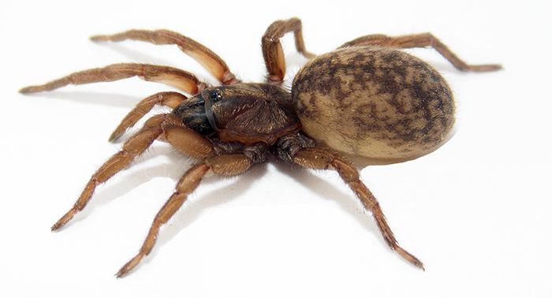

| LETRA | Nombre | Apellido | Ciudad | Animal | Fruta | Color | |
| B | Blanca |
|
Barranquilla | Borojo | |||
| A | Andrea | Aguilera |
|
 | ir a pagina frutas tropicales | ||
| M | Maria | MORALES |
Manizales |
ANIMALES
|
|||
| V |
|
Villanueva | ir a pagina de vacas | Vainas |